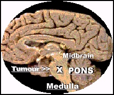

My Brain Home Page
My Brain Home Page
The brainstem is the connection between the brain and spinal cord.
It is made up of three sections: midbrain, pons and medulla.
The pons is the site of the roots of nerves controlling facial movement and sensation and eye movement, among other important functions. It is also like a highway where many nerves -- controlling body movement -- pass and switch over en route to the spine.
The medulla is a critical area with the roots of nerves controlling lung movement and heartbeat.
A tumour in the brainstem pressures or destroys vital nerves, leading to possible paralysis, nausea, headaches, swallowing difficulties, double vision and slurred speech, among other things.